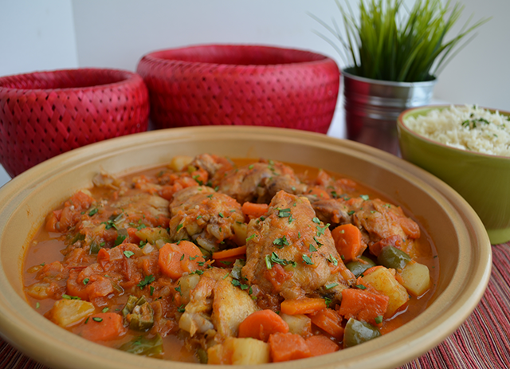

Maraq (Somali Stew)

Description
Maraq (Somali Stew) is a traditional stew known for its rich flavors. It typically includes tender meat (such as goat or beef), vegetables (like potatoes and carrots), and aromatic spices (such as cumin and turmeric).
Maraq is simmered slowly to develop deep flavors and is often served with rice or Somali flatbread.
Ingredients
- 1 lb (450g) meat (commonly goat, lamb, or beef), cut into cubes
- 2-3 potatoes, peeled and diced
- 2-3 carrots, peeled and sliced
- 1 onion, finely chopped
- 2 tomatoes, chopped
- 1 bell pepper, diced (optional)
- 2-3 cloves of garlic, minced
- 1 tablespoon vegetable oil
- 1 teaspoon ground cumin
- 1 teaspoon ground coriander
- 1/2 teaspoon turmeric powder
- Salt and pepper to taste
- Water or broth for simmering
Steps
- In a large pot, heat vegetable oil over medium heat.
- Add onions and garlic, sauté until softened.
- Add meat cubes and brown on all sides.
- Stir in tomatoes, bell pepper, and spices. Cook for a few minutes.
- Add potatoes, carrots, and enough water or broth to cover.
- Bring to a boil, then reduce heat and simmer uncovered until meat and vegetables are tender, about 1-2 hours.
- Season with salt and pepper to taste.
- Serve hot with rice or Somali flatbread (Canjeero).